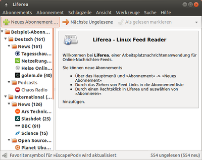

Liferea
Dieser Artikel wurde für die folgenden Ubuntu-Versionen getestet:
Ubuntu 16.04 Xenial Xerus
Zum Verständnis dieses Artikels sind folgende Seiten hilfreich:
Liferea  , benannt aus Linux Feed Reader, ist ein Programm zum Lesen von Newsfeeds, das sich gut in auf GTK-basierenden Desktop-Umgebung einpasst. Liferea zeichnet sich durch eine Reihe von nützlichen Funktionen aus, die das Programm interessant machen:
, benannt aus Linux Feed Reader, ist ein Programm zum Lesen von Newsfeeds, das sich gut in auf GTK-basierenden Desktop-Umgebung einpasst. Liferea zeichnet sich durch eine Reihe von nützlichen Funktionen aus, die das Programm interessant machen:
Anzeigeumschaltung zwischen Textzusammenfassung und HTML-Ansicht
Individuelle Feed-Einstellungen (Anzahl zu holender Nachrichten, Cache)
Einfache Organisation in Ordnern
News Bins (Nachrichten archivieren)
Suchordner
Importfunktion
Integration von Mozilla
Tab-Browsing
HTTP-Authentifikation
Herunterladen und Abspielen von Anhängen (Audio und Video)
Tray-Icon

Installation¶
Liferea kann über die offiziellen Paketquellen installiert werden. Zur Installation [1] ist folgendes Paket notwendig:
liferea (universe)
 mit apturl
mit apturl
Paketliste zum Kopieren:
sudo apt-get install liferea
sudo aptitude install liferea
Benutzung und Konfiguration¶
Danach findet man bei Ubuntu-Varianten mit einem Anwendungsmenü einen Programmstarter [3] unter "Internet -> Liferea Feedreader". Beim ersten Start enthält Liferea bereits einige Abonnements. Hier kann man schon einen ersten Eindruck vom Programm bekommen.
Die Schaltfläche "Schließen" beendet standardmäßig nicht das Programm, sondern versteckt nur das Programmfenster. Im Benachrichtigungsfeld (Systray) befindet sich nun ein entsprechendes Symbol. Mit einem einfachen Klick kann man das Fenster wieder herstellen und ausblenden. Dieses Verhalten sorgt für Probleme bei der Desktop-Oberfläche Unity - siehe Unity Desktop.
Man sieht zunächst die klassische dreiteilige Ansicht: links die Abonnements, hierarchisch geordnet, rechts oben die Schlagzeilen des gewählten Feeds, rechts unten dann der Nachrichtentext. Unter "Ansicht" gibt es noch weitere Möglichkeiten, die sich aber nachteilig auf die Übersichtlichkeit auswirken können. Die Ansicht lässt sich für jedes Abonnement separat festlegen.
Abonnements¶
Möchte man die Abonnements eines anderen Programms nutzen, beispielsweise von Thunderbird, so kann man sie als opml-Datei importieren über "Abonnements -> Feed-Liste importieren".
Ein Feed lässt sich unter "Abonnements -> Neues Abonnement" oder ein  -Klick auf das erste Icon der Werkzeugleiste.
-Klick auf das erste Icon der Werkzeugleiste.
Firefox¶
Man kann aus dem Firefox heraus direkt RSS-Feeds abonnieren. Hier geht man zu "Bearbeiten -> Einstellungen -> Anwendung -> Web-Feed". Dort muss man dann "andere Anwendung hinzufügen" wählen und /usr/bin/liferea-add-feed auswählen.
Feeds lesen¶
In der linken Spalte der Abonnementsübersicht können an jeder Stelle per Rechtsklick neue Abonnements und Ordner erstellt oder verändert und gelöscht werden. Diese Funktionen sind auch per Menü über "Abonnements" abrufbar. Auch können alle Ordner und Abonnements in ihrer Reihenfolge und hierarchischen Gliederung beliebig angeordnet werden.
Mit den Pfeiltasten oder mit der Maus kann man nun die Schlagzeilen durchgehen. Im Nachrichtenfenster sieht man neben der Schlagzeile je nach Feed die ganze Nachricht im einfachen Textformat (Links und Bilder oder eingebettete Multimediainhalte werden angezeigt), einen Teil der Nachricht oder gar nichts. Wird die Nachricht nicht oder nicht vollständig angezeigt, lädt man durch einen Doppelklick auf die Schlagzeile oder durch Drücken der ⏎ -Taste die kompletten Webseite.
Integration des Web-Browsers¶
Eine Besonderheit von Liferea ist, dass es sich im Gegensatz zu Browsern, die auch RSS-Feeds verwalten können, um einen Feedreader handelt, der auch Browsercharakter hat. So wird auch Tabbed Browsing, also das Laden mehrerer Webseiten als Reiter in einem Programmfenster unterstützt. Auf diese Weise kann man Schlagzeilen per Rechtsklick auf die Schlagzeile und "In Reiter öffnen" oder jeden beliebigen Link einer Nachricht durch diesen Eintrag im Kontextmenü oder den gewohnten Mittelklick durch die Maus als Tab öffnen.
Die Funktionalität des Browsers ist sehr eingeschränkt. Neben der Adressleiste besteht nur die Möglichkeit, im Verlauf (History) vor und zurück zu gehen bzw. den Tab zu schließen.
Ein nützliches Feature ist die Möglichkeit, Bookmarks anzulegen, allerdings kann man diese nur zu externen Anbietern von sogenannten Social bookmarking services hinzufügen, leider nicht zu lokalen Lesezeichen. Wer dies dennoch nutzen möchte, kann unter "Programm -> Einstellungen -> Schlagzeilen -> Web Integration" den Dienst seiner Wahl bestimmen.
Einstellungen¶
Die globalen Einstellungen aller Newsfeeds kann man unter "Tools -> Einstellungen" vornehmen.
Will man abweichende Werte für einzelne Abonnements einstellen, so kann man dies per  -Klick auf das Abonnement unter "Eigenschaften". Hier kann man ebenso die Zugangsdaten angeben, falls der Zugang zu einem Feed durch einen Login beschränkt ist.
-Klick auf das Abonnement unter "Eigenschaften". Hier kann man ebenso die Zugangsdaten angeben, falls der Zugang zu einem Feed durch einen Login beschränkt ist.
Organisation¶
Für die Organisation stehen neben den eigentlichen Abonnements weitere spezielle Ordner bereit. Sie lassen sich im Menü über "Abonnements" bzw. per -Klick und "Neu" anlegen:
| Symbol | Name | Funktion |
| Ordner | Einfacher Ordner, alle Abonnements und spezielle Ordner lassen sich beliebig hierarchisch ordnen. | |
| Suchordner | Ermöglichen das Durchsuchen von Titel und/oder Inhalt aller Abonnements nach bestimmten Ausdrücken oder Attributen. Die Löschung der Schlagzeile löscht auch ihre Suchordner-Einträge und umgekehrt. | |
| Ungelesen | Standardmäßig vorhandener Suchordner, der alle ungelesenen Nachrichten enthält. | |
| Wichtig | Standardmäßig vorhandener Suchordner, der alle mit als "wichtig" markierten Schlagzeilen enthält. Die Markierung wird im Schlagzeilenfenster im Kontextmenü der Schlagzeile "Flagge setzen oder löschen" gesetzt. | |
| Quelle | Hier besteht die Möglichkeit der Integration entweder eines Bloglines-Kontos oder eines Planeten. Der Vorteil des einfachen Abonnements ist hier, dass die einzelnen Blogs, aus denen sich der Planet zusammensetzt, untergliedert aufgelistet werden. | |
| News Bin | In News Bins lassen sich Nachrichten archivieren, sie bleiben auch nach dem Löschen der Schlagzeile erhalten, dazu in der Schlagzeilenübersicht im Kontexmenü über "Kopieren nach -> (Ordner wählen)" auswählen. |
Problembehebung¶
Abspielen von Audio-Podcasts¶
Liferea verfügt über einen integrierten Player zum Abspielen von Audio-Dateien. Es handelt ich dabei um eine Variante des XSPF-Players . Beim Versuch, in Liferea Audio-Dateien wiederzugeben, kann es jedoch zu einer Fehlermeldung des Adobe-Flash-Players kommen. Diese lässt sich durch folgendes Verfahren beseitigen:
Man lädt den Flash Local Content Updater
von Adobe herunter. Dies ist ein Kommandozeilen-Programm, mit dem sich die Sicherheitseinstellungen des Flash Players so verändern lassen, dass er nicht nur Inhalte aus dem Web, sondern auch lokale Dateien abspielt. Mit dem folgendem Befehl [4] werden die Einstellungen für Liferea angepasst, danach sollte das Abspielen von Podcasts problemlos möglich sein:
sudo ./LocalContentUpdater -a /usr/share/liferea/media/xspf_player_slim.swf
Ab Firefox 36¶
Ab Firefox Version 36 entfällt der Kommandozeilenparameter:
-remote ...
ersatzlos. Liferea verwendet diese Option in der Form firefox -remote openURL(<URL>,new-tab) nur dann, wenn Firefox explizit als Browser eingestellt wurde. Klickt man dann in Liferea auf einen Link, öffnet sich eine neue Instanz des Firefox mit dessen Standard-Einstellungen - ohne dass die URL geladen wird. Von dieser Problematik sind auch etliche andere Programme betroffen, nicht nur Liferea.
Als Lösung entweder den Standard-Browser des Betriebssystems oder einen anderen, manuell zu benennenden Browser verwenden.
 Programmübersicht
Programmübersicht- Erstellt mit Inyoka
-
 2004 – 2017 ubuntuusers.de • Einige Rechte vorbehalten
2004 – 2017 ubuntuusers.de • Einige Rechte vorbehalten
Lizenz • Kontakt • Datenschutz • Impressum • Serverstatus -
Serverhousing gespendet von